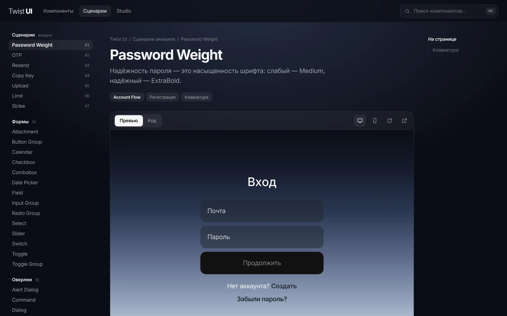
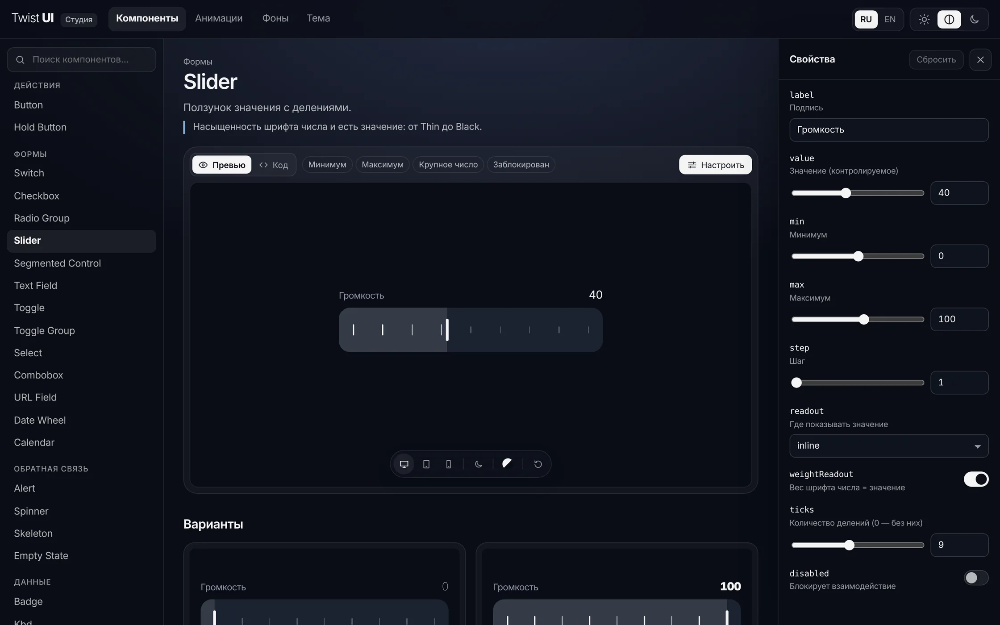
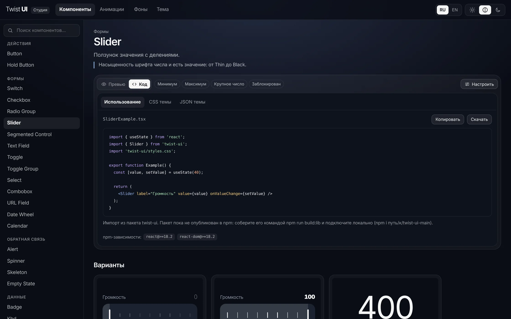

Одна идея на все компоненты
Всё началось с наблюдения: интерфейсу часто не нужен лишний элемент, чтобы показать состояние. Его может передать то, что уже есть на экране, — насыщенность шрифта, форма, движение.
Я взял знакомые компоненты и переосмыслил каждый через эту идею. У слайдера насыщенность числа и есть значение — от Thin до Black. Надёжность пароля — это вес шрифта, а не полоска под полем. Загрузка кнопки — волна насыщенности по буквам вместо спиннера. Подсказка в поле переписывается в ошибку по словам.
Так появились 59 концептов: 52 компонента и 7 связанных шагов жизни аккаунта — от пароля и кода подтверждения до загрузки фото и блокировки. Каждый — отдельная живая страница с исходным кодом и управлением с клавиатуры.

Микро-взаимодействия
Главное правило: движение должно что-то сообщать. Если анимация не передаёт состояние, а просто украшает, её нет. Все компоненты двигаются по одной кривой, поэтому интерфейс из разных частей ощущается цельным.
От концептов к продукту
Концепты можно было только посмотреть. Чтобы ими пользоваться, я перенёс все 59 в React-библиотеку на дизайн-токенах: каждый компонент берёт цвета, шрифты, скругления и длительности только из переменных темы. Поэтому одна тема перекрашивает сразу всё.
Для библиотеки сделал студию и сразу решил, для кого она. Дизайнеру нужно сначала увидеть и потрогать компонент, а не читать API. Поэтому наверху страницы — большое живое превью и быстрые состояния, снизу — плавающая панель вида: ширина, светлая или тёмная тема, фон, перезапуск анимации. Свойства спрятаны за кнопкой «Настроить» и выезжают справа. Документация для разработчиков — в самом низу.

Код собирается вместе со свойствами: что настроил в превью, то и получаешь в TSX. Управляемые свойства сразу превращаются в useState, рядом лежат CSS и JSON текущей темы.

Свои темы за минуту
Готовых тем девять: от ночной и «бумажной» до пиксельной, «табло» и трёх стеклянных. Но главное — собрать свою, не подбирая 14 цветов вручную.
В быстрой палитре достаточно задать от одного до трёх цветов: основной, акцент и оттенок фона. Остальное подбирается само для светлой и тёмной темы, в пространстве OKLCH, где яркость цветов воспринимается ровнее. Контраст пересчитывается сразу, и любой цвет потом можно поправить руками.
Кроме цвета в теме настраиваются шрифты (28 шрифтов Google Fonts, у тех, где нет кириллицы, — пометка), иконки в четырёх стилях, скругления, отступы, тени, длительность анимации и материал: сплошной, матовое, прозрачное или тонированное стекло. Свои темы сохраняются, переименовываются и переносятся через JSON.
Фоны и движение
Анимированные фоны
Стеклянным темам нужен фон, а искать подходящую картинку каждый раз долго. Поэтому в студии есть генератор motion-blur фонов: восемь шаблонов, свои цвета или фото, направление, мягкость, смаз, зерно и анимация. Поверх фона сразу видно стеклянную инфографику, чтобы проверить читаемость. Фон копируется кодом или скачивается картинкой 2560×1600.
Одна кривая на всё
Все компоненты двигаются по одной кривой — так анимации разных частей не спорят между собой. В редакторе её можно поменять: тянуть точки или выбрать пресет, а пять дорожек сразу показывают, как кривая влияет на движение, масштаб, прозрачность, поворот и насыщенность шрифта. Бледный шарик в первой дорожке идёт линейно — для сравнения. Готовый CSS копируется одной кнопкой.
Что было сложно
Не скатиться в эффекты
Когда у всех компонентов одна идея, легко начать добавлять движение ради движения. Поэтому для каждого концепта вопрос один: что пользователь узнаёт из этой анимации? Если ответа нет, анимация не нужна.
Стекло ломает раскладку
Стеклянный материал построен на размытии фона. Но внутри такого контейнера всплывающие окна позиционируются относительно него, а не окна браузера, и съезжают. Поэтому диалоги, поповеры и командное меню живут вне стеклянных контейнеров.
Красиво, но читаемо
Цветное стекло и анимированные фоны легко делают текст нечитаемым. Контраст проверен автоматически во всех вкладках, в светлой и тёмной теме, а у цветных стеклянных плашек тест следит, чтобы белый текст держал контраст по всему градиенту. Если в системе включено «уменьшить движение», анимации сокращаются.
Скругления без «ушек»
Мелочь, которую видно сразу: у вложенного элемента радиус равен внешнему радиусу минус отступ. Так углы остаются концентричными в любой теме и при любом скруглении.
Что получилось
За десять дней концепты превратились в библиотеку, которой можно пользоваться, и студию, в которой её удобно собирать.
- 74 компонента: формы, оверлеи, навигация, данные, чат, сценарии аккаунта и инфографика.
- 9 готовых тем и конструктор своей темы из одного цвета.
- Генератор анимированных фонов и редактор кривых анимации.
- Экспорт TSX, CSS и JSON темы; интерфейс студии на русском и английском.
- Тесты на токены, шрифты, иконки, хранилище, поведение компонентов и сгенерированный код.
Библиотеку посмотрели знакомые дизайнеры. Это не исследование востребованности, а первая проверка взглядом со стороны. Пакет пока не опубликован в npm: следующий шаг — выложить его и посмотреть, как им пользуются в реальных проектах.